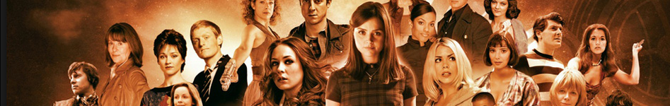

| HOME | The Doctors | The Companions | The Villians |
|  | |||
|
Barbra WrightBarbara Wright is a fictional character in the British science fiction television series Doctor Who and a companion of the First Doctor. She was one of the programme's very first regulars and appeared in the bulk of its first two seasons from 1963–65, played by Jacqueline Hill. In the film version of one of the serials, Dr. Who and the Daleks (1965), Barbara was played by actress Jennie Linden, but with a very different personality and backstory, which includes her being a granddaughter of "Dr Who". Barbara appeared in 16 stories (74 episodes). |